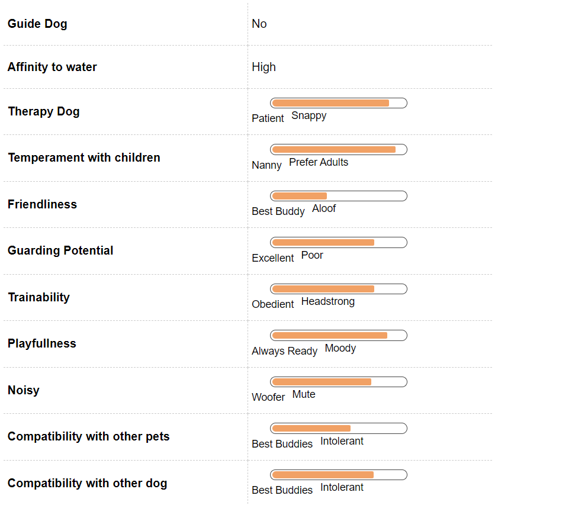
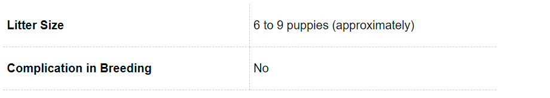
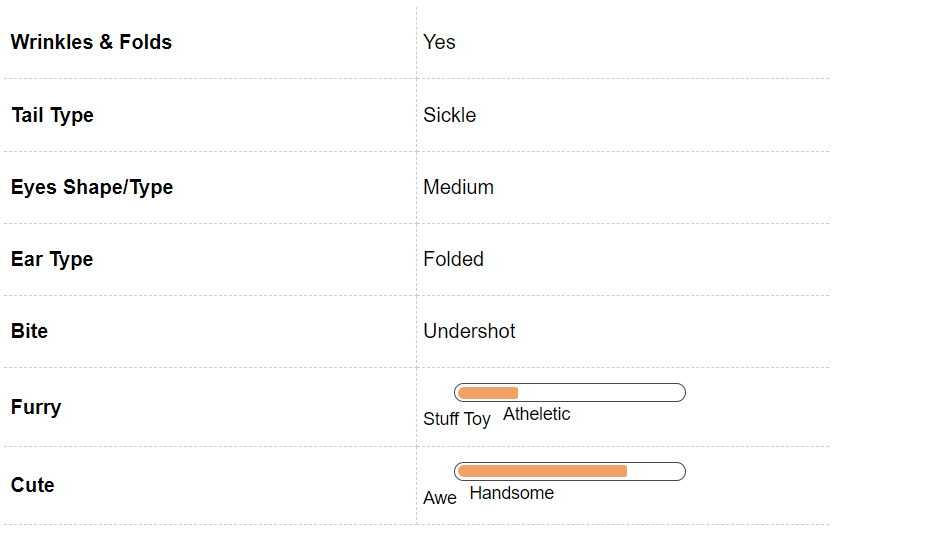

Boxer Dog Breed Information
Introduction
Deep dark eyes, poised yet imposing disposition, large muscular square head and those mischievous eyes, Boxers are one of the happiest breeds in the entire canine world, and that happiness and joy of life is reflected in their eyes. Boxers are a stocky, medium sized, powerfully built dogs developed and originated in Germany. German Boxers are aptly named so as they have the tendency to get on their hind legs and throw a punch. In the world of working dogs, Boxers are ranked as a middleweight champion and are considered to be one of the most fun loving breeds. They are also the sixth most registered breeds according to the American Kennel Club. Canine behaviourists are unable to determine as to why Boxers take the longest time to mature. Unlike other dogs, Boxers fully mature at the age of 3 years, so practically anyone who owns a Boxer has a 3 year old child who is happy and smiling while trying to please everyone around. Some of the famous celebrities such as Marilyn Monroe, Gisele Bundchen, Jennifer Love Heweitt, Cameron Diaz, Justin Timberlake, Humphrey Bogart, Aishwarya Rai and Tony Curtis are the proud owners of a Boxer. If you are a proud owner of this majestic breed or if you are planning to get a Boxer as a family pet, you are making an exciting decision. We bring to you all the aspects that you will have to keep in mind before getting a Boxer so that you are able to provide an environment that develops a healthy dog and a long lasting companionship.
History
Boxers have been considered a part of the Molosser dog group that was developed in Germany in the late 19th century. Its origin dates back to a German Bullenbeisser, a large Mastiff type of a dog, that was mated with English Bulldogs brought in from Great Britain. It is generally accepted that a Bullenbeisser was an ancestor of the modern day Boxer. In 1895, three Germans - Friedrich Rober, Elard Konig and R Hopner decided to stabilise the breed and exhibit it in a competitive dog show which led to the development of the first Boxer breed standard in 1902. It was in 1904 that the American Kennel Club registered its first Boxer and in 1915 Dampf vom Dom was recognised as the first champion Boxer dog. It was during the World War 1 that Boxers gained importance as they were used for military work - as messengers, pack carrier, attack dog and even guard dog. However, it was post the World War 2 that Boxers gained popularity across the world.
Unique Aspects
One of the most unique aspects of a Boxer is its abnormally long tongue. Infact Boxers hold the world record for having the longest tongue - a unusual 17 inches from base to tip. Another unique aspect of the Boxer is its unusual shape of the skull. Also called brachycephalic skulls, a Boxer has a flat skull with a short muzzle and a big underbite. According to the standards set by the American Kennel Club, the ratio of the whole head to that of the length of the muzzle should be 3:1. The side off the nose has folds that run downwards on the sides of the muzzle. The nose is set high and the lower jaw of the dog should protrude beyond the upper jaw and should be bent slightly upwards. Another unique aspect of a Boxer is that for years their tails and ears have been docked and cropped. However, after a lot of protests and pressure from animal rights groups, veterinary associations and public, the docking and cropping has been banned and prohibited in many countries.
Fun Trivia

Boxers have the perfect looks of a warrior but in contrast to the looks they are one of the most docile companions that you can get. Their trainability levels make them perfect pets to be trained for almost anything such as even featuring in movies. In addition to the movie fervor there are a lot of celebrities as well who are the proud owners of this breed.
Movie Character
There are a number of movies that feature your Boxer. This includes Homeward Bound 2 – Lost in San Francisco, Kevin of North and Thirteen. In addition to this they have featured in the TV show CSI. Closer home this breed was the beloved pet of Preity Zinta in the movie Dil Hai Tumahara.
Celebrity Boxer owners
Boxer has a list of celebrities that swear by the breed. This includes Humprey Bogart, Lauren Bacall, Shirley MacLaine, George Clooney, Jodie Foster and Justin Timberlake. Bollywood Star Arshad Warsi also has a Boxer named Ninja and Aindrita Ray is also a proud owner of a Boxer. In fact, even Arjun Rampal has two boxers which he loves dearly.
Vital Stats:
Dog Breed Group:
Working Dogs
Height:
28-31
Inches
Weight:
24-32
Kg
Life Span:
11 to 14 years
Pros and Cons
| Pros |
Cons |
| Perfect family parts for all children and adult |
Need regular exercise and runs |
| One of the easiest breed to train |
Does not fare well in extreme temperatures |
| Easy to groom, does not require much effort |
Prone to various cancers |
Boxer Maintenance & Effort
Grooming
Boxers are one of the most easiest breeds to groom. Blessed with sleek, short coat, Boxers come in three different fur colours - fawn, brindle and white - with or without markings. According to research, white Boxers are rarely considered suitable as there are over 95% chances of them being deaf and also that they are highly susceptible to developing cancer. The coat of a Boxer requires minimal grooming and often they are known to groom themselves just like cats do. Boxers can shed quite a bit, so using a soft bristle brush weekly will keep the shedding under control. Regular bathing will help keep the fur clean. Pet parents to Boxers will have to keep in mind that due to the short fur, the skin of the Boxer is extremely sensitive to extreme cold or heat. Their short muzzle makes them highly susceptible to overheating or overcooling. Therefore, if you are in a place where there are extreme weather conditions, please ensure that appropriate care is taken to maintain the temperature for the dog. Dental grooming is also a must for the Boxers. Regular brushing will ensure that there is no tartar or plaque buildup and the mouth of the Boxer remains clean and there are no chances of the onset of any periodontal problems. The nails of a Boxer grow really fast. To avoid any injury to the feet especially during running or playing, it will be advised that the nails of the dog are regularly trimmed and kept short. Cleaning of ears using a ear wipes will also help avoid any ear infections or wax buildup. While grooming, check for any rashes or redness in the skin, especially between the paws and the ears. A good grooming regime begins from an early age. Introducing your dog to dental, grooming and bathing regimes will ensure that the puppy gets accustomed to the routine and is comfortable with it.
Boxer Hair & Coat
Boxer Health & Care

Common Health Issues
Boxers are generally a healthy breed of dog. However, before getting a new puppy it will be advised that all medical history of the parents of the pup is referred to rule out any genetic or hereditary disorder that might inflict the pup. Some of the common health issues that Boxers might be prone are:
Cancer -
For reasons unknown, Boxers are more prone to developing cancer than any other breed. Excessive white marking on a Boxer makes it more prone to developing skin cancer and tumours. As a precautionary measure, apply sunscreen to your dog, especially on the ears, muzzle and paws to protect them from the harmful sunrays.
Hip Dysplasia -
Hip Dysplasia is a genetic disorder where the hip bone has a defect in connecting with the hip joint as a result of which the dog may experience pain or lameness in either of the rear legs. As the dog grows, he / she may also develop arthritis. Before getting a puppy, check the medical documents of the parents to rule out hip dysplasia.
Aortic Stenosis -
Aortic Stenosis is a cardiac defect that is found in most Boxers. Due to Aortic Stenosis, Boxers may feel lethargic all the time and have have episodes of fainting. When a dog has Aortic Stenosis, the heart works at twice the normal rate to pump blood. The defect in the aorta narrows the aortic valve to enable a smooth blood supply. When you get a boxer have a veterinary doctor check the heart for any murmur. Aortic Stenosis can prove lethal for the dog.
Hypothyroidism -
Hypothyroidism is another condition that inflicts Boxers. In hypothyroidism, the hormone gland of the dog does not function well and as a result, the growth and the development of the dog gets affected. Common symptoms of hypothyroidism include dull fur, extreme lethargy, obesity / weight loss and mental dullness. A full blood check up will be required to diagnose the problem.
Deafness -
According to research, Boxers, especially white Boxers are prone to deafness. Studies have shown that about 18% of white Boxers are born deaf either in one ear or both. In case your dog is deaf or has become deaf overtime, do not breed them.
Corneal Dystrophy -
Corneal Dystrophy is an inherited disease that inflicts most dogs, and is especially common in Boxers. In this disease, the cornea of the dog is either underdeveloped or is opaque. This might cause loss of vision to the dog. Gastric Dilatation Volvulus or Bloat - This is a common problem in deep chested dogs. Bloat can be lethal in nature if not detected early as it causes organ, especially gastric failure. In case of Bloat, there is a sudden buildup of gas in the digestive system and then causes the organ to twist.
Boxer Behavior

Temperament
Boxers are one of the most playful and happy dogs. Extremely alert and watchful, German Boxers are also very poised, loyal, obedient, affectionate and self assured in nature. They have been blessed with a patient yet protective temperament making them very good family dogs. Boxers require at least 1 - 2 hours of vigorous exercise that will engage them physically and mentally. Owners who will not be able to spend adequate amount of time with their Boxer should not consider this breed as a pet. The lack of exercise can lead to destructive behaviour such as chewing on furniture or digging in the yard. Like all dog breeds, early socialisation with children, other human beings and pets will ensure a well developed and gentle temperament.
Environment
Boxers do extremely well in both apartment and large houses. However, pet parents who live in an apartment will have to ensure that their dog is getting ample amount of exercise everyday to expend the excess energy and to stay healthy. Due to their large size, Boxers may knock small pets or children and even things off while they are exploring around the house. They are very sensitive to extreme heat and cold. So if you live in areas with extreme temperatures, extra precaution will have to be taken for regulating temperature so that your dog does not fall ill.
Training & Intelligence
Considered one of the intelligent breeds, Boxers do well with a strict training regime. First time owners of a Boxer may want to seek professional help from Canine behaviorists or Dog Trainers to ensure that a comprehensive training regime is designed for Boxers that keeps them engaged and also meets the characteristics of a working dog breed. Boxers respond extremely well to positive reinforcements and activities that allow it to think independently.For years Boxers have been trained for agility, obedience and other trainings that suit a working dog breed. As parents to a Boxer, be ready to spend a lot of time training and playing with your Boxer. All forms of training for your Boxer puppy should start at an early age. It will be imperative for new pet parents to start house training as soon as the puppy arrives so that there are fewer incidents inside the house.
Boxer Breeding

Procreation
Boxers are a healthy and sturdy breed and become mature by the age of 3 years. If you are going to mate and breed your Boxer, make sure that you understand thoroughly the medical histories of his / her mating partner and also the medical history of the Boxer’s parents so make sure that they are not suffering from any serious genetic disorder that may be deterrent to the overall growth of the new puppies. If you are a first time pet parent, seek medical advice to ensure that the mating and breeding process is comfortable for both the dogs.
Puppies
An average litter size of a Boxer varies between 2 - 10 puppies with an average life expectancy of 11- 14 years. When the puppies are born, it will be imperative to vaccinate them and to train them from early own as they are extremely active and if not monitored may destroy furniture and other things that might catch their attention.
Boxer Appearance

Body
Boxers are a rare combination of intimidating looking yet extremely friendly dogs. The brachycephalic skull of the Boxer is one of its most prominent features. The length of the muzzle to that of the body should be in a ratio of 1:3. Boxers also have a well defined underbite i.e. their lower jaw protrudes beyond the upper jaw. A full grown Boxer male will stand anywhere between 56 cms - 63 cms and weighs between 27 - 32 kgs while a fully grown female Boxer stands anywhere between 53 - 61 cms and weighs between 24 - 29 kgs. Boxers come in three distinct colours - fawn, brindle and white with markings. In many Boxers, the chest will have a prominent white marking. Boxers have long and sturdy legs that come useful when they run and also, when they go on their hind legs and play or “box” with their forelegs. In many countries, the ears and the tail of Boxers are docked and cropped. However, through the help of Animal Welfare Associations and Humane Societies, there has been a ban on docking and cropping of ears and tails of Boxers.